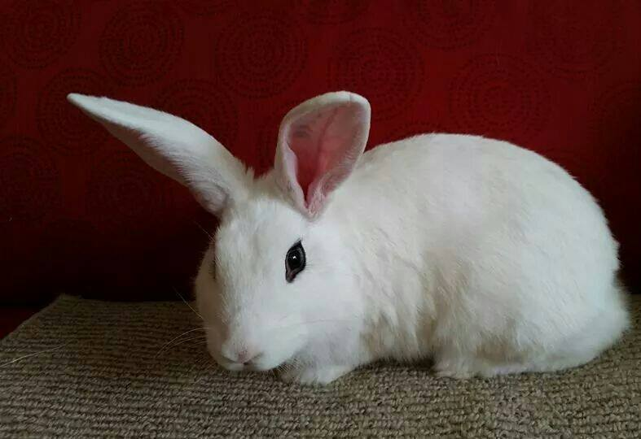

Green Herb Acres is a small homestead dedicated to the preservation of rare breeds of small livestock. Located in central North Carolina, the animals are bred for their tolerance to heat and humidity as well as exemplifying their breed standard.

Recently our food supply has undergone some challenges not seen in many decades. Additionally, the quality of life of commercial livestock is often compromised for the sake of increased productivity. At Green Herb we strive to give all animals in our care the most humane life experince we possibly can.
All animals are given the best possible care in accordance with their species. Not all species appreciate attention but those that do are handled from day one. Feed and enrichment opportunities are also chosen with care. The on-site garden is mostly for the benefit of the animals growing seasonal tomatoes, kale and wheat grass, among other things.
We raise the rare Blanc de Hotot rabbit. It is recognized as a rare breed by both the American Rabbit Breeders Association and the Livestock Conservancy. We raise Ancona ducks, a US based breed recognized as threatened by the Livestock Conservancy. We also raise Rex rabbits and a variety of chickens. We recently introduced Ayam Cemani chicks to the farm. We're hoping to be able to hatch them out next year.